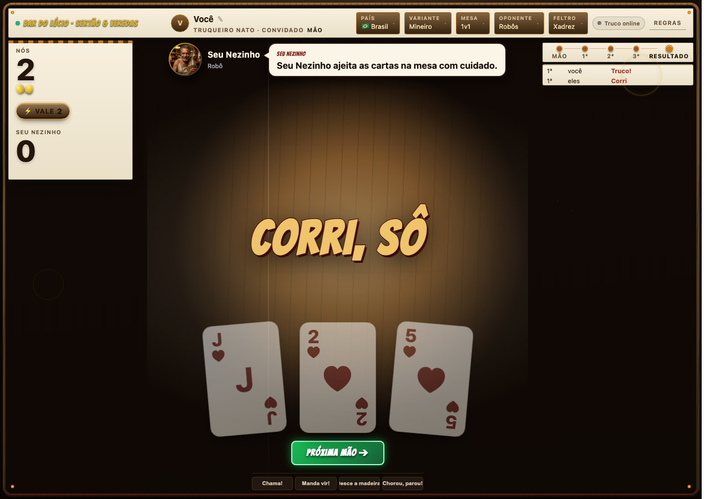

Truco · Engineering journal
One table. Zero hatches.
2026-10-19 — Remove the last hatch
Status: built. Base: origin/main at 238fddb10, including the lobby hybrid composition. Work branch: feat/truco-last-hatch.
Truco now declares zero escape hatches. Previously, the dealer observed and changed the host DOM to present the table. Its 930-line module is deleted. The existing hybrid machines project presentation fields; native regions, bindings, pure text renderers, CSS and terminal timers display them. Country selection uses a declarative chart. The execution contract is in Online hybrid table and Table presentation.
The existing ir.html design was retained. No new visual direction or human decision was needed. Review fixes preserve storyboard states, regional speech, shout replay and fading, and one current hand and control set per deal. Whole-hand wrappers retire immediately because outgoing phase metadata would otherwise continue to affect the screen's CSS selectors.
The running app was used to play a card, shout, resize to a phone and choose Argentina. These captures were inspected:


Checks ran from apps/truco, with SAYT_VERSION=v0.44.1 for Sayt:
Verification
| Check | Result |
|---|---|
./saytw generate | Exit 0 |
./saytw lint | Exit 0 |
./saytw test | Exit 0; includes 20 online/lobby machine cases and four mounted screen cases |
deno test --config tests/deno.json --no-lock --no-check --allow-read --allow-env tests/arena.test.ts | Exit 0; 30 cases |
./saytw integrate --docker-bridge-port 32375 | Exit 0; acceptance 39/39, fit, window, visual and replay |
The dedicated bridge port avoided interruptions through the shared default Docker bridge. Fit reported zero findings. Visual passed its critical threshold with zero critical findings; its repeated viewport/interaction frames emitted 473 major and 1,246 minor nonblocking findings. Remaining advisories concern small tap targets, clipped content, alignment and transient card visibility.
Architecture advice used gpt-6-astra at high effort. Frontend and QA reviews used gpt-6.1-sol at medium effort in place of the unavailable Terra route. Implementation and the explicit simplification pass stayed on the session model; the pass required no additional abstraction. No design-generation tool was needed. No human decision remains for the hatch removal.
Review follow-up · Quick shouts expire during play
Before, shouting and immediately raising could leave the player’s speech bubble visible indefinitely and suppress later announcements. Gameplay invalidated the revision-bound expiry; a queued move could also consume its timer. Expiry now follows the game and shout identity independently of gameplay. A stale reply stays silent but still schedules expiry, and old timers cannot affect a newer shout.
The same seed and four seconds of table time were used for both captures. The fixed game clears the player’s bubble and lets the fold announcement appear, with no browser errors.


The first integration run exposed a visual-check timing defect: machine frames ignored an expired 800ms settling wait, although staggered dealing lasts up to 1,140ms. Browser probes showed the reported overlaps during flight and clear controls once settled. The checker now uses its normal 2,500ms bound and reports any state still moving before applying the same measurements. The game’s layout and visual rules are unchanged.
| Follow-up check | Observed result |
|---|---|
| Sayt generate, lint and test | Exit 0; arena suite now 32 cases, including immediate raise and stale timer regressions |
| Sayt integrate, bridge port 32375 | Exit 0; browser acceptance 39/39, fit, window, visual and replay passed |
| Visual scan after correcting settling | Zero critical findings; 466 major and 1,245 minor advisories |
| Visual checker type check and existing settling tests | Exit 0; all six settling checks passed |
| Project-wrapper launch and browser use | Exit 0; shout → raise → expiry confirmed on the running game |
QA reviewed the timer fix and frontend reviewed the settling correction, with no remaining findings. Both used gpt-6.1-sol at medium effort in place of the unavailable Terra route. Implementation and the simplification pass used the session model. The accepted behavior was restored, so no new design oracle or human decision was needed.
Edge runtime review · Fair deals and durable deadlines
2026-10-19 — The Cloudflare release uses the shared cluster and machine engine. Review found that UUID version and variant bits entered the deal’s random stream, failed deadlines could block later ones, and an alarm could boot a directory during import. The corrected compiler omits those fixed bits; the edge engine starts fresh rules and the same fuel budget for every step. Resolved deadlines advance their watermark, failed deadlines retry after a bounded delay, and future deadlines keep their alarm. Reset clears alarms before loading data.
The ticker image now includes its shared tick key and CRUD protocol. Rendered documents carry the release’s security policy on fresh and cached responses. The existing storyboard and screenshots above remain the accepted visual contract; this turn changes runtime behavior.
| Runtime proof | Observed result |
|---|---|
| PostgreSQL machine oracle | Exit 0; 17 steps |
| Cloudflare machine oracle | Exit 0; 12 steps |
| Pinned edge clock and object regressions | Exit 0; three tests and 13 integration steps, including a healthy future deadline firing without incoming requests despite an earlier failing deadline |
| Entropy, fuel parity, machine contracts and SSR headers | Exit 0; 24 focused tests |
| Backend and QA review | No remaining actionable findings after the alarm retry correction |
Sayt generate, lint, test, build and integrate exited 0. Container acceptance passed 39/39; fit, window, visual and replay passed. The Cloudflare snapshot also builds successfully. Its separate browser run passed 38 distinct acceptance cases across runs; the deployment-upgrade case remains blocked by socket.getProtocol is not a function in Playwright under Deno TLS, with no Worker boot or load errors in the isolated rerun. That case passes against the container stack.
A final regression verifies sub-millisecond schedule timestamps: alarm completion uses the same millisecond resolution as tick IDs, preserving the stored watermark without repeated wakeups for one tick. The three clock/object tests and 13 integration steps pass with the pinned Deno and frozen lockfile. Broader writer regressions pass with verbose Sayt output; normal reporting mode has a pre-existing stderr expectation failure, reproduced on the unchanged release branch.
The Browser plugin reported no available browser, so this turn has no new manual play-through or screenshots. The production Worker has not been redeployed with these changes.